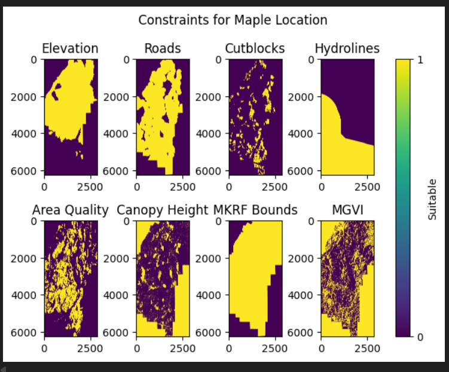
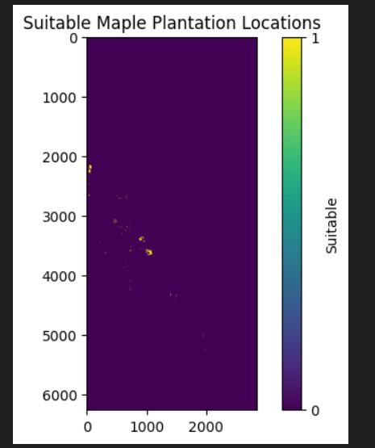
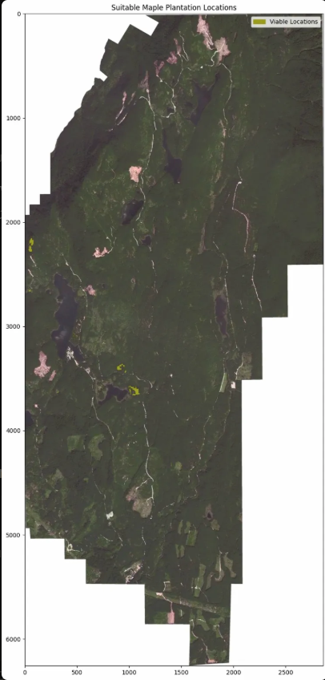

This project uses Python to perform a raster-based suitability analysis to identify optimal locations for a maple tree farm in British Columbia. Environmental criteria including elevation, road proximity, canopy height, area quality, hydrolines, cutblocks, MKRF bounds, and MGVI were applied as binary masks to input rasters and combined into a final suitability layer. Results were visualized as a multi-panel plot and overlaid transparently on a true-colour SPOT satellite image.
rasterio and numpy| File | Description |
|---|---|
dem.tif | Digital Elevation Model of the study area |
RoadsBuff.tif | Raster buffer layer around road network |
Spot_data.tif | True-colour SPOT satellite imagery |
| Library | Purpose |
|---|---|
rasterio | Reading, writing, and displaying raster data |
numpy | Array operations and binary mask creation |
matplotlib | Multi-panel plotting and visualization |
Each input raster was read using rasterio and evaluated against suitability thresholds to produce a binary mask (1 = suitable, 0 = not suitable). Criteria included elevation between 300–700 m, proximity to roads, canopy height, area quality, hydrolines, cutblocks, MKRF bounds, and MGVI. Binary masks were combined using logical AND operations to produce a final suitability raster. The output was cast to uint8, saved as a GeoTiff, and visualized in three ways: a multi-panel plot of all input masks, a standalone binary suitability map, and a transparent overlay on the SPOT true-colour image.

Multi-panel plot showing each input raster after applying suitability criteria — yellow = suitable, purple = not suitable

Final binary suitability map showing locations meeting all combined criteria

Suitable maple plantation locations (yellow) overlaid transparently on SPOT true-colour satellite imagery
rasterionumpy comparison operatorsmatplotlibrasterio.plot.show